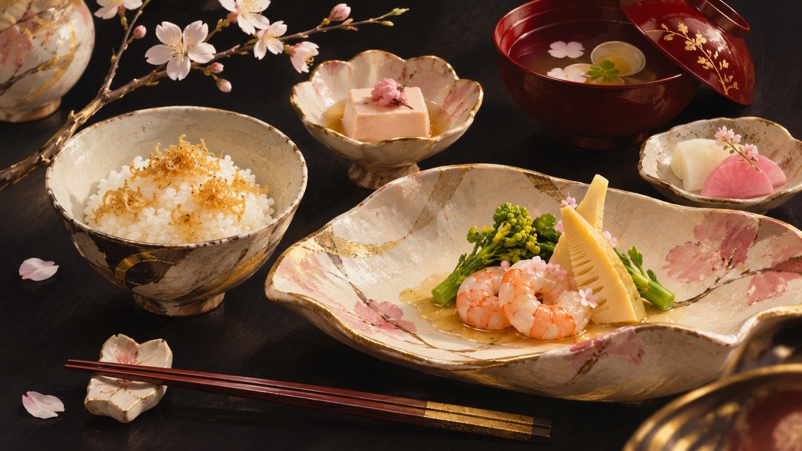

GINZA, A SPOONFUL OF LUXURY
五感を澄ませて歩く、私だけの時間。
食やお茶、空間を通して、自分のために味わう銀座時間を紹介するシリーズ。誰かに見せるためではなく、静かに自分を満たすためのひと匙を、銀座の名店でたどります。

ARTICLES
記事一覧
現在10軒の体験記を掲載中（公開日が新しい順）。期間限定メニューを扱った記事には、その旨を明記しています。
2026.04
なだ万 アプローズ
帝国ホテル 東京｜桜の昼膳（春の季節メニュー・体験記）
帝国ホテル東京の日本料理店で味わう、春をテーマにした昼膳。桜豆腐や苺のムースなど、淡い彩りの一皿一皿に季節の気配が静かに宿る。
noteで読む2025.12
銀座WEST
1947年創業の洋食店｜卵サンドと喫茶の時間
戦後まもない銀座に生まれた洋食店が守り続ける、丁寧な時間。卵サンドと紅茶に、ゆるやかに流れる喫茶文化の余韻を味わう。
noteで読む2025.11
銀座ライオン 本館
大正創業のビアホール｜黒煉瓦とモザイク壁画の空間
90年以上の時を重ねた黒煉瓦のアーチ天井とモザイク壁画が迎えるビアホール。一杯のビールに、銀座の社交の記憶が溶けていく。
noteで読む2025.10
銀座資生堂パーラー
創業1902年｜名物オムライスと昭和の洋食文化
120年以上、銀座の美意識を支えてきたサロン。ふんわり卵のオムライスとプリン・ア・ラ・モードに、憧れだった洋食の記憶が香る。
noteで読む2025.09
みかわや
1948年創業のフランス料理店｜クリームコロッケとオムライス
戦後の銀座に西洋への憧れを映した老舗フランス料理店。艶やかな卵に包まれたオムライスに、背伸びをした大人の夢が重なる。
noteで読む2025.09
東京會舘 銀座スカイラウンジ
夜景を望む展望レストラン｜パフェマロンシャンティー
料理と夜景が織りなす一夜の物語。パフェマロンシャンティーを味わいながら、光に溶けていく銀座の夜を眺める時間。
noteで読む2025.07
不二家
大人のお子様ランチとプリン・ア・ラ・モード
昭和の洋食への憧れをそのままに。大人のためのお子様ランチと宇治抹茶かき氷に、懐かしさと甘やかな時間が重なる。
noteで読む2025.07
青果堂
銀座の路地裏の和モダンな隠れ家｜御膳とデザート
銀座の路地に静かに佇む和モダンな一軒。とろける卵のオムライス御膳と苺のプラチナパフェに、素材の声を聴く静けさを見出す。
noteで読む2025.07
銀座アスター
創業100年の老舗｜夏限定の冷やし中華（期間限定・2025年7月時点の体験記）
100年、銀座に寄り添う老舗で出会った夏限定の冷やし中華。胡麻ダレの香りと酢の効いたタレに、週末の自分へのご褒美を味わう。
noteで読む2025.07
寿月堂
歌舞伎座奥の日本茶専門店｜お抹茶と季節の甘味
歌舞伎座の奥座敷のような日本茶専門店で味わう、お抹茶と季節の甘味。香り・音・光・味が少しずつ整っていく静かなひとときを。
noteで読む自分のための、小さな贅沢を見つける。
銀座、ひと匙の贅沢は、食やお茶、空間を通して、自分のために味わう銀座時間を綴るシリーズです。noteでは、この一覧に掲載した記事を順番に読むことができます。